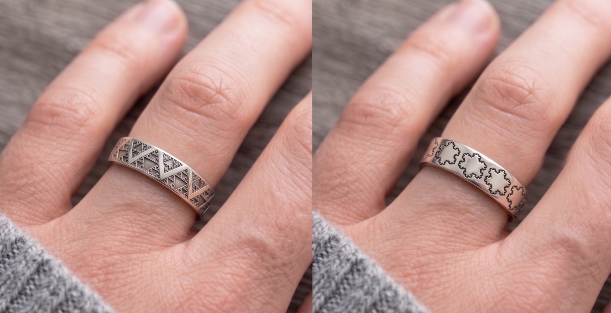

Announcement // 2026-04-27 // Hardware
Ten chip-less passive rings. Two wrist-worn hubs. Passive RF telemetry designed to excite the rings and read them back, fused with autonomic vitals. The Steady tools intervene. UnSteadyRing observes.
By Gerard & Anya Ziemski // halfmarble
At halfmarble, our focus has always been on intervention. When Young-Onset Parkinson's Disease (YOPD) makes my hands shake, we engineer tools like the SteadyHandTool to mechanically push back against the biology so I can keep soldering and building.
But intervention is only half the equation. To truly understand this disease, to evaluate if our levodopa is actually working, and to reclaim our autonomy, we need continuous, objective measurement.
The Steady tools intervene. UnSteadyRing observes.
The consumer tech industry is currently trying to track Parkinson's with smartwatches. But the wrist acts as a mechanical shock absorber. It completely dampens the fine, independent "pill-rolling" digit kinematics that define our tremor.
The medical industry's alternative? Put a battery, a Bluetooth chip, and silicon inside a "smart ring." If you live with PD, you immediately spot the fatal flaws:
We threw out that playbook entirely.
By design, UnSteadyRing's reversed topology shifts 100% of the active power, processing, and cost away from the fingers and onto two wrist-worn hubs.
The rings are completely passive and chip-less by design. No silicon. Nothing to charge. The intent is that you put them on and forget them. And because they are passive, they are designed to be inexpensive to manufacture — the goal is to make true 10-digit tracking affordable for anyone.

The two wrist hubs are designed to do the heavy lifting — acting as miniature radar stations that emit low-power RF signals down the hand, while the passive rings reflect that signal back like antennas. By measuring shifts in the reflected signals, the hubs would track the independent positions of the rings continuously and precisely.
Parkinson's is not just a movement disorder; it is a systemic failure that heavily impacts the autonomic nervous system. Tracking a tremor without physiological context is like looking through a keyhole.
By fusing finger kinematics with autonomic vitals, the system is designed to map the entire biological footprint of a medication cycle in real time.
Today's medical device market runs on the "Black Box" model. Corporations hoard your raw data, run it through hidden algorithms, and charge you a subscription to view a dumbed-down "health score."
UnSteadyRing is a Glass Box.
This is your biology. You own the data. As the patient, you get direct access to your own raw, unadulterated kinematic vectors and physiological waveforms — on your own device, where they stay. The architecture is open-source for developers to build on; and clinical researchers only ever see opt-in, privacy-protected aggregates — never your raw records, which never leave your device.
▶ See the live gait & freezing-of-gait readout — simulated →If you know halfmarble, you know we believe in open hardware. So why did we just file provisional patent applications with the USPTO for this battery-free architecture?
Defensive patenting.
If we simply published this architecture online, a massive corporation could legally take it, patent a slightly modified version, and send us a Cease & Desist letter. They would lock this technology behind a $200 paywall.
We filed these provisional patent applications to secure an early priority date and keep this architecture defensively protected — so no company can patent it out from under the PD community and lock it behind a paywall.
We have the measurement methods modeled on synthetic data and provisional applications on file — the sensing hardware isn't built yet. Now, we build the chassis.
We are not looking for Venture Capital. We are looking for:
If you want to help us engineer the future of accessible movement disorder tracking, grab beta access below, or reach out to collaborate.
halfmarble — the science is the engine
halfmarble // the science is the engine